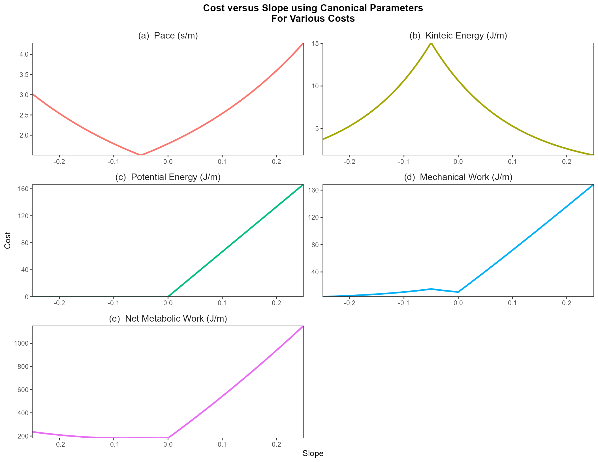
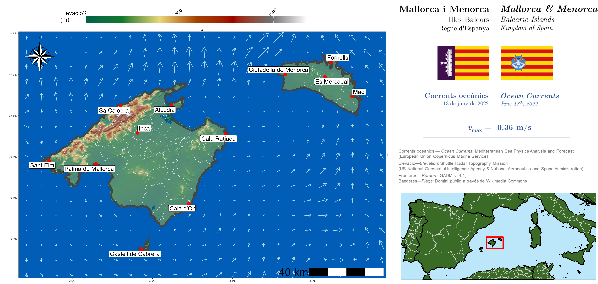

movement.RmdIn this chapter, I introduce the lbmech package for R’s
cost distance tools, originally the core of the lbmech
package’s functionality. I derive cost functions for the movement of an
arbitrary animal from first principles of energetics and mechanical
physics—not from regressed functions of energetic expenditure with
limited applicability across taxa and behavioral modes. This allows us
to ensure that the cost model is generalizable, and allows us to
separate out three independent types of energy expenditure involved in
locomotive transport: (1) kinematic/mechanical work for moving things;
(2) kinematic/mechanical work against gravity for lifting things; and
(3) basal metabolic expenditure required to keep the animal alive. In
the second section. Finally, I provide a brief example of the analytical
framework using GPS, topographic, and ocean current data from the
Illes Balears (Clementi et al. 2021;
Farr et al. 2007; Lera et al. 2017).
lbmech is a geospatial package originally designed for
least-cost path analysis in R employing differential
surfaces representing the cost to move between any adjacent locations on
the landscape. It contains additional tools to calculate time- and
energy-based costs-of-travel for humans and animals moving across the
landscape, including built-in statistical tools to derive the cost
functions themselves from GPS data. Moreover, the package contains a
number of additional features in development related to estimating
potential energetic net primary productivity on the landscape from
tabulated data; the demographic implications of adaptive processes; and
geostatistical tools to measure inequality. However those functions are
independent of the cost-distance functions of lbmech that
were developed in response to questions arising from the original
purpose and will be discussed in other vignettes.
The general philosophy behind the least-cost aspects of the package
is that energetic and least-cost path analyses should always be simple,
the most time-taking parts should be done at most once, and ideally that
costs should be rooted in empirical reality. In general terms, both the
cost-distance functions of lbmech and the deterministic
functions of the R library gdistance
(van Etten 2017) provide similar
capabilities but with notable differences in computation and
ease-of-use. Both employ differential surfaces representing the cost to
move between any adjacent locations on the landscape, and both store
these costs in ways that enumerate the possible transitions. Both then
perform transformations on the cost values before generating a network
graph object and using igraph’s highly-efficient
distances() function (Csardi and
Nepusz 2006) to perform distance calculations before outputting a
matrix or raster. gdistance
stores movement costs as their reciprocal ( , i.e. \(1/\textrm{resistance}\) in a sparse matrix
representing every possible transition between two cells on a raster.
The use of conductance allows for most cell-to-cell transitions to be
zero, since impossible transitions due to distance have a conductance of
\(1/\infty = 0\). This, in turn, allows
the sparse matrix to be relatively small on the disk or memory given
that zero values are not stored. However, the use of conductance makes
it cumbersome to employ functions where \(f(0)
\neq 0\) requiring the use of index masking. This in turn
encounters integer overflow errors with ‘large’ datasets that are
nonetheless of a necessary size for most reasonable purposes. Moreover,
the use of sparse matrices requires that the object be recreated every
time it is modified, greatly limiting I/O speed and severely affecting
complex calculations.
lbmech stores data and performs all linear algebra
directly on resistance values using the data.table
package (Dowle et al. 2023). Not only is
this more intuitive, but it greatly simplifies the syntax necessary for
many types of algebraically simple operations. lbmech
stores each possible movement as its own unique row, with entries for a
from node, a to node, and either the
difference in or raw final and initial values of the raster encountered
during the transition. Nodes are named after the coordinates of the
raster cell to which they correspond, and are stored as character
strings in the form 'x,y'. This allows for (1) in-place
modification of objects, greatly increasing processing speed; (2)
bidirectional raster analysis describing accumulated costs to and from a
node, and (3) additive, nonlinear, and multivariate transformations of
large rasters and independent considerations without running into
integer overflow limits. Since lbmech largely functions as
a wrapper for applying data.table,
igraph, and fst functions to terra SpatRaster raster
objects, it’s easy to generate any arbitrary cost function using data.table
syntax.
To ensure that the most computationally intensive steps only need to
be performed once for many repeated analyses, lbmech also
modularizes important aspects of the cost-distance workflow such that a
large world of possible movement can be defined with consistent cost
calculations, with the calculations themselves only performed on an
as-needed basis. This allows for otherwise prohibitively-large spatial
regions and fine spatial resolutions to be considered. This is arguably
necessary when land-based transport requires decision-making to be made
at scales on the order of 1-10 m. Files by default are stored in the
temporary directory, however if it’s expected that the particular
procedure will be repeated again after R is reinitialized
it is recommended to designate a consistent workspace directory as
functions are called. This ensures that each file only need be
downloaded once, and each world only needs to be generated . Geographic
projections and transformations are performed with the terra package (Hijmans et al. 2023) providing significant
speed upgrades versus raster. Read/write operations are
performed using the terra and fst libraries (Hijmans et al. 2023; Klik 2022), permitting
fast referential access (and limited partial access) to datasets.
Through this highly-compartmentalized data management scheme,
lbmech can support the use and consistent reprojection of
multiple elevation rasters as a source for a world given a polygon grid
whose objects point to a URL or filepath with that region’s elevation
data set. Additionally, if no elevation data sources are provided,
lbmech will fetch the appropriate SRTM tiles using the elevatr
package (Hollister et al. 2021).
Finally, to encourage the use of least-cost analysis rooted in
empirical reality, lbmech’s default workflow is geared
towards the study of time- and energy- based considerations when moving
across a landscape as described in the above theory section (although
the use of any cost function is possible as well). The default
energyCosts() function used by
calculateCosts() employs a generalized form of Tobler’s
hiking function to estimate maximum preferred walking speed at a given
slope, and one of three biomechanical models for the amount of kinematic
work exerted per unit time or per stride. Unlike similar tools such as
enerscape for R in this regard,
lbmech allows for the estimation of various types of
energetic losses (due to kinematic locomotion, work against gravity,
basal metabolic processes) instead of simply the total energetic or
metabolic expenditure. Moreover, through the getVelocity()
function it provides a way of deriving cost functions from GPS data of
human and animal movement. This is significantly easier to collect and
less invasive than the VO\(_2\) meters
required for direct estimation of net energetic expenditure. Finally,
lbmech incorporates the geosphere
package’s distance functions (Hijmans et al.
2022) thereby allowing for simple, native geodesic corrections at
all stages of calculation.
In order to move across the terrestrial landscape, two principal types of work must be performed. The first is kinetic work, required to move an object at a particular speed, \(K = \frac{1}{2}mv^2\) for an arbitrary particle:
\[\begin{equation} K = \frac{1}{4} m v^2 \frac{\ell_s}{L} \end{equation}\]for human locomotion as derived by Kuo (2007): 654—where \(m\) is an object’s mass, \(v\) it’s speed, \(\ell_s\) is the average step length and \(L\) the average length of a leg; and for quadrupeds \(K = m(0.685v + 0.072)\) as derived experimentally by Heglund, Cavagna, and Taylor (1982). For the purposes of simplicity, the rest of the derivation will be using the appropriate parameters for humans but the steps are equivalent for the derivation of quadrupeds. The second type of work is work against gravity, required to lift an object a height \(h\) (\(U = mgh\)), where \(g\) is the magnitude of the acceleration due to gravity, and \(h\) the height an object is raised. Importantly, this latter form of work cost is incurred only when moving uphill. Summing the two components results in the total amount of work performed to move across the landscape:
\[\begin{equation} \tag{1} W = \frac{1}{4} m v^2 \frac{\ell_s}{L} + \begin{cases} mgh & dz \geq 0\\ 0 & dz < 0 \\\end{cases} \end{equation}\]To obtain the expected velocity when moving across a landscape of variable topography, we can employ Tobler’s Hiking function, which predicts that velocity decreases exponentially as the slope departs from an `optimum’ slope at which an traveler’s velocity can be maximized:
\[\begin{equation} \tag{2} \frac{d\ell}{dt} = v_{\textrm{max}} e^{-k | \frac{dz}{d\ell} - s |} \end{equation}\]where \(\ell\) is horizontal
movement, \(z\) vertical movement,
\(v_{\textrm{max}}\) the maximum
walking speed, \(s\) the slope of
maximum speed and \(k\) how sensitive
speed variation is to slope. Canonical applications of the Tobler
function for humans employ \(v_{\textrm{max}}
= 1.5\) m/s, \(k = 3.5\), and
\(s = - 0.05\) = \(\tan(-2.83^\circ)\). However, the
getVelocity() function in the lbmech package
allows researchers to obtain the appropriate variables for their subject
species of interest from high-resolution GPS tracking data.
Humans and animals, however, are far from ideal engines. Generally, for every calorie of work expended humans require five calories of dietary energy resulting in an efficiency factor of \(\varepsilon = 0.2\). Dividing Eq. 1 by \(\varepsilon\), and plugging in Tobler’s Hiking Function (Eq. 2) for \(v\) results in the total amount of energy used by a human to travel between two points on the landscape. This is our function for kinematic energy expenditure.
People also consume energy just to stay alive as defined by our base metabolic rate (BMR, represented by \(\frac{dH}{dt}\)). Assuming a relatively constant amount of daily physical activity and by extension a relatively constant basal metabolic rate, we can model the total amount of energy used by a human to travel between two points on the landscape and stay alive, by adding \(H\) to our equation:
\[\begin{equation} \tag{3} E = \frac{1}{4} m v^2 \frac{\ell_s}{L} + \frac{dH}{dt} dt + \begin{cases} mgh & dz \geq 0\\ 0 & dz < 0 \\\end{cases} \end{equation}\]Both of the energetic equations derived above display anisotropic behavior due to dependence on \(\theta = \arctan \left(\frac{dz}{dx}\right)\). However, only the potential energy term is linearly anisotropic whereas the kinetic energy term is dependent on slope through an exponential term to the second power. As such, the ArcGIS Distance toolkit is insufficient for true energetic analyses. This incapacity is largely because it—like other least-cost tools perform the calculations directly upon the localized value at a particular cell. Rather, since this is a problem of performing a line integral over a differential surface, an algorithm that performs its calculations based on the difference between individual cells is required.
The figure below plots each of the above cost functions (for time, kinetic energy, gravitational potential energy, mechanical/kinematic energy, and net metabolic energy) versus slope, assuming the canonical parameters for Tobler’s Hiking Function and a human male. \(k = 3.5\), \(s = -0.05\) \(m = 68\) kg, \(v_\textrm{max} = 1.5\) m/s, \(L = 0.75\) m, \(\ell_s = 1.6\) m, \(g = 9.81\) m/s\(^2\), \(\frac{dH}{dt} = 93\) J/s, and \(\varepsilon = 0.2\); (a) Tobler’s Hiking Function inverted for Pace \(t\); (b) Kinetic Energy, \(K\); (c) Work against Gravitational Potential Energy, \(U\); (e) Kinematic/Mechanical Energy Performed, \(W = K + U\); (f) Net Metabolic Energy Consumed, \(E = \frac{W}{\varepsilon} + \frac{dH}{dt}t\).

A least-cost path algorithm is going to preferentially select paths whose segments tend towards the lowest values on these plots. When minimizing the amount of time (Fig. 1a, and considering the canonical parameters), slopes closer towards the slope of fastest travel \(s = - 0.05\) are preferred, with costs increasing exponentially as one moves away from that value. When minimizing the energy of motion (kinetic energy, Fig. 1b), the most extreme slopes will be preferred since movement is slowest and kinetic energy is minimized. When minimizing the work performed against gravitational potential energy (Fig. 1c), any negative slope is equally preferred, with positive slopes increasing in cost linearly. When minimizing the kinetic energy, steeper slopes are preferred downhill mildly over flat-ish slopes, with a notable avoidance of slopes tending around \(s = -0.05\), with slopes linearly—but rapidly—increasing in positive slopes. In other words, downhill movement is primarily kinetic energy-limited, whereas uphill movement is mainly gravitational potential energy-limited. The situation is similar for net metabolic energy, but here additional penalties are incurred for overly-slow routes that be more mechanically efficient but take long enough that metabolic processes incur costs. Thus, the most efficient slopes are those that occur at the global minimum at \(\frac{dz}{d\ell} = -0.317 = \arctan(-17.6^\circ)\).
One final consideration that to date no other least-cost toolkit rigorously assesses is potential movement on and across water. Movement considerations across bodies of water are conceptually simpler than movement across land. The water’s surface can be represented by a two-dimensional vector field with values at each point representing water’s surface velocity \(\vec{v}_\textrm{water}(x,y)\), with still water having a velocity of \(\vec{v}_\textrm{water} = 0\). The velocity of someone traveling on water then is simply:
\[\begin{equation} \tag{4} \vec{v}(x,y) = \vec{v}_\textrm{water} + \vec{v}_\textrm{travel}, \end{equation}\]where \(\vec{v}_\textrm{travel}(x,y) = v_\textrm{travel} \hat{\ell}\) is the travel speed of the method of travel (such as swimming or rowing a boat) over still water, and \(\hat{\ell}\) the intended direction of travel. If \(\vec{v} < 0\), then travel in that direction is impossible. For the purposes of simplicity, we assume that the caloric cost is proportional to \(v_\textrm{travel}^2\).
The GPS dataset consists of 15,296 usable GPX tracks obtained from https://wikiloc.com, and was
first described by Lera et al. (2017) who
used it to identify seasonal variability in hiking trail activity and
network organization. Given a directory with .gpx files,
the tracks can be imported as a data.table using
lbmech::importGPX():
Since GPS tracks can be sampled at a per-length rate smaller than the
size of even the smallest raster pixels we might employ, GPS tracks are
downsampled to a comparable rate—about a pixel length per GPS sample.
For an expected pixel size of 50 m and an approximate maximum speed of
1.5 m/s, t_step = 50/1.5. We can use the
lbmech::downsampleXYZ() function for this:
gpx <- downsampleXYZ(gpx, t_step = 50/1.5,
t = 't', x = 'long', y = 'lat', z = 'z',
ID = 'TrackID')The xyz data is then passed to lbmech::getVelocity(),
which for each sequence of GPS points (1) calculates the changes in
elevation \(\frac{dz}{d\ell}\) and
planimetric speed \(\frac{d\ell}{dt}\),
and (2) performs a nonlinear quantile regression to get a function of
the form Tobler, which returns a list with the nonlinear model, the
model parameters, and the transformed data.
velocity_gps <- getVelocity(data = gpx[y < 90], # Filter for y
degs = TRUE, # Lat/Long; geodesic correction
tau_vmax = 0.95, # Quantile for v_max
tau_nlrq = 0.50, # Quantile for nlrq
v_lim = 3) # Filter for dl/dt
print(velocity_gps[1:(length(velocity_gps)-1)])
#> $model
#> Nonlinear quantile regression
#> model: dl_dt ~ v_max * exp(-k * abs(dz_dl - s))
#> data: [ data (dl_dt <= v_lim) & (dl_dt > v_min) & abs(dz_dl) <= slope_lim
#> tau: 0.5
#> deviance: 1458241
#> k s
#> 5.5890 -0.0392
#>
#> $vmax
#> [1] 1.61
#>
#> $s
#> [1] -0.0392
#>
#> $k
#> [1] 5.59
#>
#> $tau_vmax
#> [1] 0.95
#>
#> $tau_nlrq
#> [1] 0.5Finally, the lbmech::plotVelocity() function can be used
to plot the log-transformed probability of a given speed at a given
slope versus the regressed function:
plotVelocity(velocity_gps)Given the large amounts of data downloaded, processed, and re-used at different parts of the workflow, it is highly recommended to define a consistent directory for the workflow particularly during model-building stages.
# Define a working directory
rd <- "Baleares"
if (!dir.exists(rd)){
dir.create(rd)
}lbmech can automatically download terrain data, but we
also want to consider ocean movement. Here, we’ll import the
Mediterranean Sea Physics Analysis and Forecast (CMEMS MED-Currents,
EAS6 system) (Clementi et al. 2021) for
ocean currents around two of the principal Balearic Islands—Mallorca and
Menorca—on 13 June 2022 and define our region of maximum movement (our
‘world’) around that raster’s extent. Note that the user needs to
provide their own username and password:
# MOTU Command to download Barealic Island ocean velocity
# Note that you have to provide your own username and password
command <- paste0('python -m motuclient --motu https://nrt.cmems-du.eu/motu-web/Motu --service-id MEDSEA_ANALYSISFORECAST_PHY_006_013-TDS --product-id cmems_mod_med_phy-cur_anfc_4.2km_P1D-m --longitude-min 1.8343864083631984 --longitude-max 4.736546729949184 --latitude-min 38.85730429069023 --latitude-max 40.484272955821766 --date-min "2022-06-13 00:00:00" --date-max "2022-06-14 00:00:00" --depth-min 1.0182366371154785 --depth-max 1.0182366371154785 --variable uo --variable vo --out-dir ', rd ,' --out-name Ocean_Currents.nc --user #YOUR#USERNAME#HERE# --pwd #YOUR#PASSWORD#HERE#>')
system(command, intern = TRUE)
# Import an ocean water surface velocity dataset
currents <- project(rast(paste0(rd,"/Ocean_Currents.nc")),
proj)
# Projection will be UTM 31N WGS1984
proj <- "EPSG:32631"
# Define region of maximum possible movement
region <- as.polygons(ext(currents),proj)
#> Reading layer `Baleares_Region' from data source
#> `D:\lbmech\Altar\Vignettes\outputs\Baleares_Region.kml' using driver `KML'
#> Simple feature collection with 1 feature and 2 fields
#> Geometry type: POLYGON
#> Dimension: XYZ
#> Bounding box: xmin: -10.8 ymin: 34.9 xmax: 18 ymax: 44.2
#> z_range: zmin: -4880 zmax: 345
#> Geodetic CRS: WGS 84
As with any raster operation, a consistent projection and grid needs
to be defined to snap/fix all sources. However, unlike most raster
packages lbmech does not require foreknowledge of the
spatial extents; only the resolution and offsets. A raster can be
provided, or one can be made with the lbmech::fix_z()
function:
# Define the raster properties
z_fix <- fix_z(proj = proj,
res = 50)Although a ‘world’ can be defined directly based on a digital
elevation model, generally it is easier to define a polygon coincident
with the coverage of a digital elevation model and an attribute pointing
to a URL/filepath with the source. The lbmech::makeGrid()
can make such a polygon for a raster or filepath input, while using a
polygon will induce future functions to download SRTM data as-needed.
Similar polygons are frequently distributed by state GIS agencies
(e.g. Pennsylvania; Massachusetts:
# Make a grid
grid <- makeGrid(dem = region, # Input; here polygon for SRTM
nx = 15, ny = 15, # Cols/Rows to divide the polygon
sources = TRUE, # Just crop/divide, or point to source?
zoom = 11, # Zoom level for SRTM data
overlap = 0.05) # Fraction overlap between adjacent tilesA ‘world’ is formally defined as a directory containing all possible
constraints on movement, fixed to a particular spatial projection. Given
the very large areas and relatively-small spatial resolutions often
employed, the data can rapidly become too large to compute all at once
in the memory. the defineWorld() function divides the
potential world of movement into individual, slightly-overlapping
‘sectors’ that are calculated and read-in only as needed. It itself
generally is not used to perform calculations.
# Define world of motion within a workspace
defineWorld(source = grid, # Elevation source, like makeGrid() output
grid = grid, # How to divide up the world
directions = 8, # How adjacency between cells are defined
neighbor_distance = 10, # Overlap between tiles in addition to ^
cut_slope = 0.5, # Maximum traversible slope
water = currents, # Water velocity source
priority = 'land', # If data for land or water, who wins
z_min = 0, # Minimum elevation, below NA in land
z_fix = z_fix, # Grid with defined projection, resolution
dist = 'karney', # Geodesic correction method
dir = rd, # Working directory
overwrite=FALSE)Once a world has been defined, a cost function can be applied using
the lgmech::calculateCosts() function. The
lbmech::energyCosts() function is provided to perform
least-time, least-work, and least-energy analyses as in the above
sections of this manuscript. As with lbmech::defineWorld(),
it itself is not generally used to perform calculations—just to define
the values.
calculateCosts(costFUN = energyCosts,
dir = rd, # Working directory with world
method = "kuo", # Method to calculate work
water = TRUE, # Consider water, or only land?
v_max = velocity_gps$vmax, # Max walking speed (m/s)
k = velocity_gps$k, # Slope sensitivity (dimensionless)
s = velocity_gps$s, # Slope of fastest motion (dimlss.)
row_speed = 1.8, # Speed over water (m/s)
row_work = 581, # work over water (J/s)
m = 68, # Mass (kg)
BMR = 72, # Basal metabolic rate (J/s)
l_s = 1.8, # Stride length (m)
L = 0.8) # Leg lengthFor a given (set of) cost function(s) and origin(s)/destination(s),
getCosts() will identify the needed sectors, make sure the
data has been downloaded (and do so if not), perform the calculations,
and save the cell-wise transition cost tables to the working directory.
That way, if they are needed for another calculation in the future they
won’t need to be fetched and prepossessed again.
# Import locations on Mallorca, Menorca, and Cabrera
pobles <- vect("localitats.shp")
reg <- as.polygons(ext(buffer(pobles, 10000)),crs = crs(proj))
costs <- getCosts(region = reg, # Area of maximum movement
from = pobles, # Origins
to = NULL, # Destinations
costname = 'energyCosts', # Name of costFUN above
id = 'Location', # Column with origin names
dir = rd, # Directory with world
destination = 'all') # Distance to all points in regionLikewise, least-cost paths can be computed given a set of nodes:
# Find all least-cost paths between Palma de Mallorca and Ma??
paths <- getPaths(region = reg,
nodes = pobles,
costname = 'energyCosts',
order = c("Palma de Mallorca","Ma??"),
id = 'Location',
dir = rd)Corridors describe the minimum cost required to take a detour to a
given location on a path between two or more given points relative to
the least cost path between those points. These can be calculated from
the output cost rasters using the lbmech::makeCorridor()
function.
corr <- makeCorridor(rasters = costs,
order = rev(c("Castell de Cabrera","Sa Calobra","Ma??")))